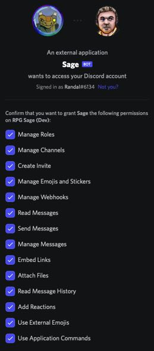
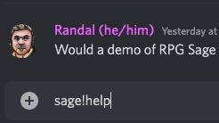
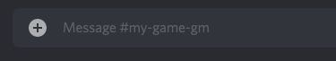
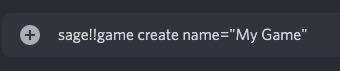

RPG Sage:
Quick Start Guide
1. Inviting RPG Sage
To invite RPG Sage to your Discord Server, click here.
Sage asks for various permissions needed to function as expected:
some features are still in development

- Manage Roles: A future Sage feature will create/manage roles for games. in development
- Manage Channels: A future Sage feature will create/manage channels for games. in development
- Create Invite: A future Sage feature will create invites for games posted as looking for players. not yet in development
- Manage Emojis and Stickers: A future Sage feature may allow custom emojis for games. not yet in development
- Manage Webhooks: This is how Sage posts dialog as characters instead of their players.
- Read Messages: Sage needs to be able to read messages to parse commands.
- Send Messages: Sage needs to be able to send messages to respond to commands.
- Manage Messages: Sage needs to be able to manage messages to function (such as edit, pin, or delete messages).
- Embed Links: Sage needs to be able to embed links to link game material to their source (such as Archives of Nethys).
- Attach Files: Sage's import command can attach a .txt of your character formatted in markdown.
- Read Message History: Sage needs to be able to search messages to function. A future Sage feature may allow for more enhanced game/dialog specific search. (not yet in development)
- Add Reactions: Sage needs to be able to add reactions to inform and interact with users.
- Use External Emojis: Sage needs access to the default emoji set on RPG Sage's Discord server.
- Use Application Commands: I am currently moving most of the commands from posting as a message to Slash Commands!
2. Command Types
The primary ways in which you will interact with Sage are through commands. Sage has four types of commands that it responds to:
- Dialog Commands
- Dice Commands
- Message Commands
- Slash Commands
Dialog and Dice commands will be discussed later.
2a. Message Commands
Message Commands are commands given to Sage by posting a message into chat, either a channel where Sage has access or via a direct message to Sage.

To further understand a Message Command, think of them as having the following components: Prefix, Action, Command, SubCommands, and Arguments.
- Prefix is there so that you can have multiple bots that know to ignore commands intended for other bots.
- Action distinguishes between telling Sage to do something and asking Sage to find something.
- Command is specifically what task you want Sage to do.
- SubCommand break down commands further such as add/remove.
- Arguments1,2 are any details you need to give Sage so that it can do the task for you.
1Arguments are sometimes given as one word (name), multiple words with quotes around them ("Vash the Stampede"), and other times key/value pairs (name="Vash the Stampede").
2If you see in these guides (or in the help) @UserMention, you need to ensure that Discord created a proper User Mention for Sage to be able to properly find the user. A "Proper User Mention" means that Discord recognized the user you were trying to mention and replaced your entered text with a link to the user. See image below.

sage!help dice is a simple command with a Prefix sage, Action !, Command help, and SubCommand dice
2b. Slash Commands
Slash Commands are commands given to Sage by typing /sage and following the prompts Discord gives you to complete the command.

Note that Sage cannot respond to a DM from you unless you have opened a channel with it, which is done via the Slash Command: /sage dm.
2c. Command Prefix
By default, Sage commands that start with ! or ? require a prefix.
sage!help
sage, Action !, and Command help.
A Server Owner or "SageAdmin" can change Sage's prefix with the prefix command:
sage!prefix set newPrefix
sage, Action !, Command prefix, SubCommand set and Argument newPrefix.
A Server Owner or "SageAdmin" can also remove Sage's prefix with the prefix command:
sage!prefix unset
sage, Action !, Command prefix, and SubCommand unset.
When the prefix is unset, commands look like:
!help
!, and Command help.
2d. Command Permissions
By default, Sage responds to all commands in any channel it has access to read and send messages.
That said, "admin" commands (those that manipulate Sage, the Server, or Games, denoted by !!) require permissions with Sage.
The Server Owner has full access and must give permission to others.
Sage Admin: Full access to Sage on the server, can assign Server Admin and Game Admin permissions and perform their actions.
sage!!admin add @UserMention SageAdmin
sage, Action !!, Command admin, SubCommand add, and Arguments @UserMention and SageAdmin.
Server Admin: Can configure channels to work with Sage, can assign Game Admin permissions and perform their actions.
sage!!admin add @UserMention ServerAdmin
sage, Action !!, Command admin, SubCommand add, and Arguments @UserMention and ServerAdmin.
Game Admin: Can configure Sage's game tables and channels, can assign Game Masters and perform their actions.
sage!!admin add @UserMention GameAdmin
sage, Action !!, Command admin, SubCommand add, and Arguments @UserMention and GameAdmin.
3. Your First Game (Walkthrough)
The following walkthrough will create a simple game "table" with 3 channels (in-character, out-of-character, and game master), a game master, and 4 players and assumes a cateogry named my-game contains the channels my-game-ic, my-game-ooc, and my-game-gm.

3a. Basic Game Setup
Send these commands by posting them to the my-game-gm channel.
make sure you are in the #my-game-gm channel.

Create a game called: "My Game".
sage!!game create name="My Game"
sage, Action !!, Command game, SubCommand create, and Argument name with a value of My Game.

Update the game's type optional step.
sage!!game set type="PF2E"
Acceptable type values are:
DND5E DnD 5e, E20 Essence 20, PF1E Pathfinder 1e, PF2E Pathfinder 2e, QUEST Quest, and SF Starfinder.
sage, Action !!, Command game, SubCommand set, and Argument type with a value of PF2E.
Update the channel type to Game Master, which enables all commands for game masters while ignoring players.
(RPG Sage assumes players don't have access to this channel.)
sage!!channel set type="GM"
sage, Action !!, Command channel, SubCommand set, and Argument typewith a value of GM.
Add the In Character channel to the game, allowing game masters and players to use dialog and dice.
sage!!channel add #my-game-ic type="IC"
sage, Action !!, Command channel, SubCommand add, and Arguments #my-game-ic and type=IC.
Add the Out of Character channel to the game, allowing game masters and players access to all of the features.
sage!!channel add #my-game-ooc type="OOC"
sage, Action !!, Command channel, SubCommand add, and Arguments #my-game-ooc and type=OOC.
Add the Game Master(s) to the game.
You can have as many or as few game masters as you want.
sage!!gm add @GmMention
sage, Action !!, Command gm, SubCommand add, and Argument @UserMention.
Add the Players to the game.
You can have as many or as few players as you want.
sage!!player add @Player1Mention @Player2Mention @Player3Mention @Player4Mention
sage, Action !!, Command player, SubCommand add, and Arguments @Player1Mention, @Player2Mention, @Player3Mention, @Player4Mention.
3b. Adding Characters
At this point, you have a simple game setup with no characters.

To add NPCs, the GM can run the following best run in #my-game-gm to hide them from players.
sage!!npc create name="Cool NPC Name" token="http://url_to_token_image" avatar="http://url_to_avatar_image"
sage, Action !!, Command npc, SubCommand create, and Arguments name="Cool NPC Name", token="http://url_to_token_image", and avatar="http://url_to_avatar_image".
To add PCs, the players can run the following best run in #my-game-ooc to avoid IC clutter.
sage!!pc create name="Fancy PC Name" token="http://url_to_token_image" avatar="http://url_to_avatar_image"
sage, Action !!, Command pc, SubCommand create, and Arguments name="Fancy PC Name", token="http://url_to_token_image", and avatar="http://url_to_avatar_image".
To add companions, familiars, or hirelings to PCs, players can run the following
sage!!companion create charname="Fancy PC Name" name="Fluffy Familiar Name" token="http://url_to_token_image" avatar="http://url_to_avatar_image"
sage, Action !!, Command companion, SubCommand create, and Arguments charname="Fancy PC Name", name="Fluffy Familiar Name", token="http://url_to_token_image", and avatar="http://url_to_avatar_image".
NOTE! If you are concerned about the image's url or hosting, you can always post the image in chat and then get the image's url by right clicking the image.
3c. Dialog Commands
At this point, you have an NPC and some PCs, possibly some companions.
Run these commands in the #my-game-ic channel.
To test the GM's basic narration, the GM can use the following commands:
gm::This is a basic narrative dialog
gm::(Fun Title)::This is a narrative dialog with a special title!
To test the NPC's dialog, the GM can use the following commands:
npc::Cool NPC Name::This is a simple NPC dialog
npc::Cool NPC Name(Alernate Title)::This changes the NPC's dialog to hide the name of unknown NPCs!
ally::Cool NPC Name::This changes the NPC's dialog color to the ally color (green by default)
enemy::Cool NPC Name::This changes the NPC's dialog color to the enemy color (red by default)
To test the PC's dialog, a Player can use the following command:
pc::This is a simple PC dialog
If they have a companion, a Player can use the following commands:
companion::This posts as a PC's Companion
companion::2::This posts as a PC's 2nd Companion!
NOTE! All alts, companions, and hirelings are created using the companion command, and thus there is only one list.
When you have more than one, if you don't provide their number in the list, the command will always use the first one, regardless of which command you used to post (alt::, companion::, hireling::).
3d. Dialog Permissions
When in a non-game channel with dialog enabled, anybody can use any dialog command (pc, npc, gm, etc).
When in a game channel with dialog enabled, dialog commands are locked to the user's role in the game: only game masters can use gm, npc, enemy, ally and only players can use pc, alt, companion, hireling.
3e. Dice Commands
In channels with dice=true which should be all the channels configured above Sage will read everything you post looking for bracket dice notation to roll dice.
When rolling dice, Sage will @UserMention the user rolling the dice and a GM if one is configured, which we did above.
Simple Dice rolls
[1d20+1 attack]
[2d6+3 damage]
Combined Attack/Damage rolls
[1d20+1 attack; 2d6+3 damage]
Targeted Attack/Damage rolls If the attack fails, the damage will not be rolled.
[1d20+1>10 attack; 2d6+3 damage]
If you want more advanced dice features specific to PF2e, such as automatically calculating crits or fatal dice, you simply need to set your game to PF2e: `sage!!game set type="PF2e"`
If you want more advanced dice features specific to E20, such as up or down shift, you simply need to set your game to E20: `sage!!game set type="E20"`